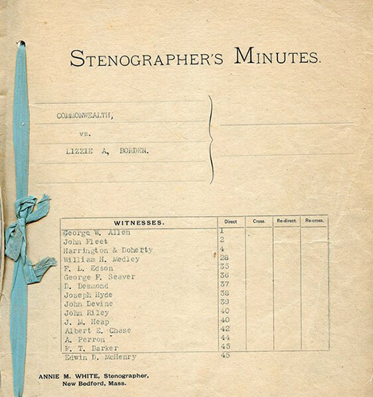
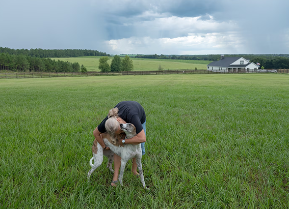

NATIONAL GEOGRAPHIC
Did Lizzie Borden get away with murder Inside the crime of the 19th century.
HISTORY & CULTURE
- 
Jurors trooped past a gaggle of anxious journalists and bystanders as the superior court in New Bedford, Massachusetts, began what would be considered the crime of the century the 19th century. The defendant was no movie star, super athlete, or international spy. She was a Sunday school teacher, accused of murders so gruesome that they are still the stuff of legend more than 130 years later. Armchair experts and scholars alike continue to debate: Did she, or didn’t she? It’s a good bet they’ll never find out.
The murders
The enigmatic woman at the center of the case was Lizzie Borden, who stood accused of murdering her father, Andrew Borden, and stepmother, Abby Borden, with an axe. Lizzie’s trial attempted to answer the question of her guilt but along the way, it raised many more. Over a century later, public fascination with the grisly murders and Lizzie’s innocence or guilt hasn’t faded.
By all accounts, the life of Lizzie Andrew Borden, an unmarried 32-year-old woman who lived with her sister Emma, father, and stepmother in Fall River, Massachusetts, was uneventful. Her father, Andrew, had grown rich first making and selling furniture and then investing his earnings in real estate. Despite his wealth, Andrew continued to live frugally.
Lizzie and Emma’s mother, Sarah, passed away in 1863. Three years later, Andrew married Abby Durfee Gray. Most accounts say the relationship between Abby and her stepdaughters was cordial but never warm or affectionate. Church-going and prosperous, the Bordens were community fixtures living quiet and respectful, if unremarkable, lives.
That changed on August 4, 1892, when Lizzie’s cries rang through her family’s house late that Thursday morning. She had discovered her 69-year-old father’s bludgeoned body on the couch in the family parlor. Further investigation upstairs yielded her 64-year-old stepmother’s body, maimed and lying dead on the floor of the guest bedroom.
Fear spread through the town of Fall River. The murderer felt bold enough to strike in broad daylight just a few blocks from a busy business district. Nothing was stolen from the house, and neighbors had neither heard nor seen anything suspicious that morning. Whispers began to circulate that the murderer might not have been an intruder at all, but someone closer to home.
Trial of the century
Within days, the entire nation was aflame with the news of the murders and potential suspects. On August 4 Emma was 15 miles away, leaving only Lizzie and the maid, Bridget Sullivan, at home. When questioned by police, Lizzie gave inconsistent accounts of her activities and whereabouts. Soon the spinster Sunday school teacher was the lead suspect.
After an inquest, authorities indicted and jailed Lizzie. Ten months later, in June 1893, the trial began with prosecutors accusing Lizzie of killing her stepmother with at least 18 blows to the head with a hatchet, then seeking out and murdering her father with another 11.
Almost immediately, the trial focused on whether Lizzie, an upper-class woman, was capable of committing the crimes—and whether her relationship with her parents was respectful or acrimonious. Testimony revealed that Lizzie and Emma lived increasingly separate lives from their parents, eating by themselves and inhabiting their own wing of the house. Witnesses reported Lizzie had referred to her stepmother as a “mean old thing,” and that when questioned about her mother’s death immediately after the murder, Lizzie had corrected the police officer, reminding him that Abby was not her mother by birth.
And then there was the poison. A druggist testified Lizzie had attempted to purchase poison before the murders, telling him she needed prussic acid to keep moths from eating a fur cape. The druggist didn’t give her the poison, and an investigation yielded no evidence of poison in the murdered Bordens’ stomachs. But prosecutors claimed Borden had committed the murder “not by the pistol, not by the knife, not by arsenical poisoning. There was but one way of removing that woman [Abby Borden], and that was to attack her from behind.”
Comments :
- john Very good
- john Very good
Leave a Reply
Your email address will not be published. Required fields are marked*
Related posts:
-
 How Siamese cats change their colors
How Siamese cats change their colorsMost of us, though, can pick out a Siamese cat. Known for their dark eye masks, socks, and tail called “points” that stand out against their cream colored bodies and sparkling blue eyes, the Siamese is one of the world’s easily recognized breeds.
View article -
 Now we know how tabby cats get their stripes
Now we know how tabby cats get their stripesOf the nearly 60 million pet cats in the United States, one of the most common is the classic tabby a coat pattern that features stripes, dots, and swirls and what looks like an M imprinted on the cat’s forehead.
View article -
Inside the growing U.S. movement to breed healthier, friendlier dogs
Laura Sharkey breeds mixed-breed dogs, but they’re not goldendoodles, chiweenies , pomskys, or any other designer crosses. She doesn’t even aim for a specific build, size, or coat. “I’m not concerned with what they look like,” she says of her puppies.
View article